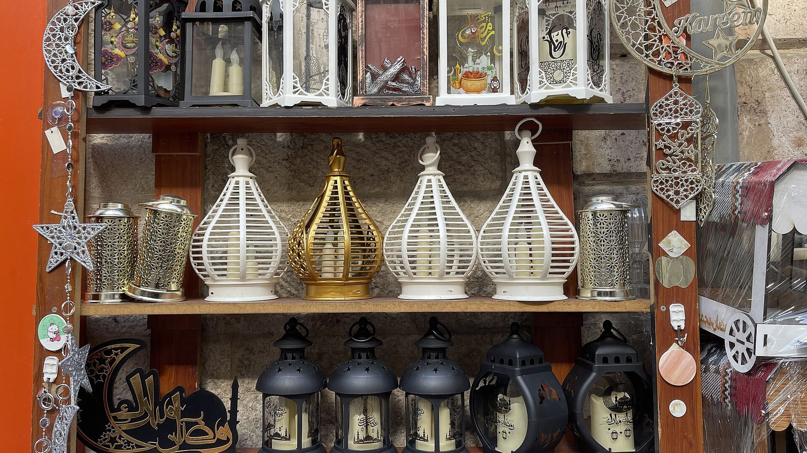

For many businesses across the Middle East, Ramadan is the most important season of the year. Daily routines change, families gather every evening, people shop for iftar, gifts and Eid, and screen time often shifts late into the night. For a small business, the month can bring a large share of the year's sales, but only if the planning starts well before the first day of fasting.
This guide walks through a practical plan you can follow, whether you run an online store, a restaurant, a café, a fashion brand or a service business. Ramadan dates follow the lunar calendar and move about eleven days earlier each year; in 2027 the month is expected to begin around early February, depending on the moon sighting. Always confirm the dates announced in your country.
Start earlier than you think
The most common mistake is treating Ramadan as a one-week campaign. Customers start preparing before the month begins, and many decisions about Eid gifts and clothes are made in the middle of the month, not at the end. A simple timeline looks like this:
| When | Focus |
|---|---|
| 6–8 weeks before | Decide offers, order stock and packaging, plan content and budget |
| 3–4 weeks before | Produce photos and videos, write messages, prepare landing pages |
| 1–2 weeks before | Teasers, waiting lists, "get ready for Ramadan" content |
| First ten days | Iftar, suhoor and daily-life content, Ramadan bundles |
| Middle ten days | Eid gifts and outfits, clear shipping deadlines |
| Last ten days | Last order dates before Eid, gift cards, express options |
| Eid and after | Greetings, thank-you messages, post-Eid offers, reviews |
Understand how your customer's day changes
Ramadan reshapes daily life. Working hours are often shorter, the hours before iftar are busy, and the evening after iftar and late at night are usually when people relax, browse and shop. Look at your own data from last year if you have it: when did orders, messages and website visits peak? Plan your posting times, ad schedules and customer service hours around those patterns rather than your usual routine.
It also helps to think about who is really buying. In many households, one person shops for the whole family's iftar, gifts and Eid outfits. Speak to that person's needs: convenience, reliability and making the family happy.
Build offers that fit the season
Discounts are not the only option, and deep discounts can hurt your margins in your busiest month. Consider offers that match how people actually live during Ramadan:
- Bundles and boxes: Ramadan boxes, family bundles, iftar trays or gift sets that raise the average order value.
- Gifting: gift wrapping, personal cards and delivery to a different address.
- Convenience: pre-orders, scheduled deliveries before iftar, or ready-to-serve options.
- Giving back: if you support a charity initiative, be transparent about exactly what you donate and how.
- Eid specials: outfits, sweets, decorations and gift cards for the final days.
Before you announce any offer, calculate your profit after the discount, shipping, payment fees and advertising cost per order. If you sell digital products, our guide on selling digital products in the Middle East covers pricing basics that apply here too.
Plan content for each phase of the month
Ramadan content works best when it feels helpful and warm rather than purely promotional. A balanced plan mixes:
- Useful content: recipes, hosting tips, gift guides, organisation ideas, or how your product fits into the month.
- Community content: behind the scenes of your team preparing orders, respectful greetings and family moments.
- Clear selling content: your offers, bundles and deadlines, stated simply.
Plan the whole month in one sitting with a content calendar, then batch the production. The system in our guide to planning a month of social media content works well for Ramadan, and you can use AI assistants to brainstorm ideas and draft captions; our free prompt library includes ready marketing prompts.
Get the tone right
Ramadan is a spiritual month, and audiences notice when brands get the tone wrong. A few principles keep you on the right side:
- Be respectful and avoid humour that mocks fasting or religious practice.
- Do not exaggerate. Honest claims and real prices build more trust than "huge" discounts that are not real.
- Write in the language and dialect your customers actually use, and check Arabic copy with a native speaker.
- Keep greetings sincere and simple. A short, well-designed "Ramadan Kareem" message often works better than a long sales pitch.
Ads: budget, timing and creative
Competition for attention usually rises during Ramadan, so plan your budget early and focus it where it counts:
- Warm up your audience with content and teasers before the month starts, so you are not starting from zero when competition is highest.
- Schedule ads around the times your customers are most active, which for many businesses means after iftar and late evening.
- Prepare several creative versions per offer and pause the weakest ones once results are clear.
- Retarget people who visited your store or engaged with your content earlier in the month.
- Watch cost per order daily and compare it with your margin, not just with clicks.
Operations: the part customers remember
A great campaign can be ruined by late deliveries before Eid. Check these points before the month starts:
- Stock levels for your best sellers and bundles, with a buffer.
- Courier capacity and cut-off dates for delivery before Eid, published clearly on your site and in your messages.
- Customer service hours that match when customers message you, and ready replies for common questions.
- Packaging, gift cards and inserts ready in advance.
- A plan for what you will do if an order is late: an honest message and a fair solution.
Email and WhatsApp: talk to people who already know you
Your existing customers are the easiest people to sell to during Ramadan. Send a short sequence: a pre-Ramadan heads-up, a launch message for your Ramadan offer, an Eid gift reminder with the last order date, and a thank-you after Eid. Only message people who agreed to hear from you, and keep each message short and useful. Our email marketing playbook explains how to set this up step by step.
Review after Eid
Within a week or two after Eid, while details are fresh, write down what happened: sales by product and channel, which offers and messages worked, where stock or delivery caused problems, and what customers said. Keep these notes with your plan for next year. Because Ramadan moves earlier each year, your next campaign will also fall in a different season, so record what depended on the time of year too.
Frequently asked questions
When should I start planning Ramadan marketing?
Six to eight weeks before the month begins is a good starting point for offers, stock and budget, with content production three to four weeks before. Teasers can start one to two weeks before the first day.
Are big discounts necessary during Ramadan?
Not necessarily. Bundles, gift options, convenience and clear Eid deadlines often work as well as deep discounts and protect your margin. Calculate profit after all costs before announcing any offer.
What time of day should I post and run ads in Ramadan?
Many audiences are most active after iftar and late in the evening, but this varies by business and country. Check your own data from last year, test a few time slots and adjust.
How do I avoid getting the tone wrong?
Keep messages respectful, sincere and honest. Avoid humour about fasting or religious practice, avoid exaggerated claims, and have a native speaker review Arabic copy before publishing.
What matters most in the last ten days?
Clear last order dates for delivery before Eid, reliable logistics, gift options such as gift cards, and fast customer service. Late deliveries before Eid are one of the quickest ways to lose customer trust.
We write practical marketing guides for small businesses and creators in the Arab world.